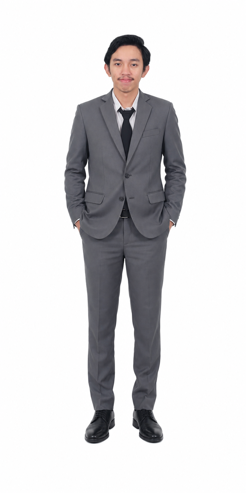

Governed core reliability assessments, strategic software test suites, and ecosystem verification cycles across high-tier enterprise applications, digital infrastructure, and banking system transformations in South Jakarta, Indonesia.
Formulated growth pipelines, analyzed B2B integration requirements, and collaborated on market alignment mechanics for automated robotic solutions and artificial intelligence pipelines in South Jakarta, Indonesia.
Designed secure internal web views, compiled structural standard-operating-procedure manuals, and verified system workflow schemas in Semarang, Indonesia.
Technical Attendance Certification • Sep 2024
Google Coursera Authorized • Sep 2021
Google Coursera Authorized • Sep 2021
Coursera Authorized Ledger • Sep 2020
PT Telkom Indonesia Authorized • Jul 2020